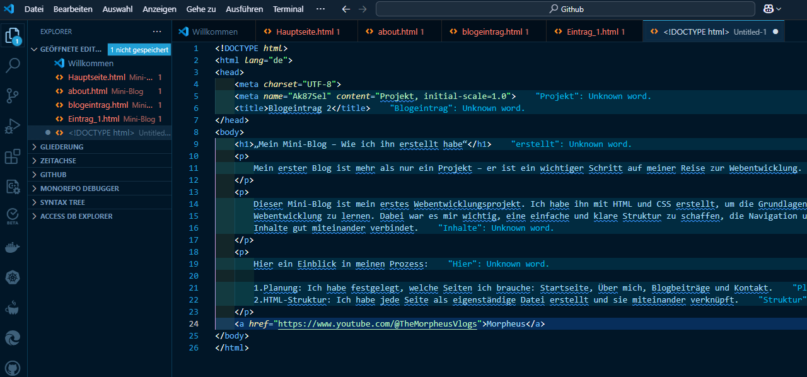

My first blog is more than just a project – it is an important step in my journey to becoming a web developer.
This mini-blog is my first web development project. I built it using HTML and CSS to learn the basics of web development. My goal was to create a simple and clear structure that connects navigation and content effectively.
Here is an insight into my process: 1. **Planning:** I defined which pages I needed: Homepage, About Me, Blog Posts, and Contact. 2. **HTML Structure:** I created each page as a separate file and linked them together.
 Check out Morpheus and learn with him Back to Blog Posts Back to Homepage